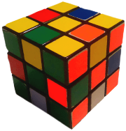

Home > Mathematics > God's Number
God’s Number
Mathematicians love the Rubik’s Cube. There’s no denying it. They are amazed at how such a seemingly simply puzzle can hold so many secrets. There is always something new to learn about the cube (if you are willing to learn, of course). Perhaps the biggest secret of all, one that took over 30 years for mathematicians to crack is God’s Number.
God’s Number, as many cube enthusiasts will already know, is the maximum number of moves required to solve any of the 43,252,003,274,489,856,000 combinations of the cube. It has been proven that this number is 20 (cube20.org), however the discovery is fairly recent (July 2010). The term “God’s Number” was coined because the mind of a being able to find the shortest sequence of moves to solve any scramble sequence would have to be thousands of times more powerful than our own, able to test millions of different combinations in the blink of an eye, something that mathematicians believe only a Deity could possess.
This number may seem low, but theoretically it should be even lower. Only around 490,000,000 combinations require the full 20 moves to be solved. Although 490 million is a huge number, it is only a fraction of the 43 quintillion possible combinations (0.0000011328955% to be precise). The chances of generating a random scramble that can only be solved in 20 moves, no more no less, is around 1 in a billion. However, the number of combinations that can be solved in 19 moves is approximately 1.5 quintillion. This means that God’s Number is much closer to 19 than 20, but unfortunately even if only 1 scramble sequence was impossible to solve in less than 20 moves, God’s Number would still be 20.
The Super-Flip
Perhaps the most famous of the rare scrambles that require exactly 20 moves to solve is the super-flip position (pictured). This is achieved by performing the following sequence of moves - R L U2 F U’ D F2 R2 B2 L U2 F’ B’ U R2 D F2 U R2 U from any orientation. The position is recognisable as every single corner is solved in its place, while every single edge is flipped in its place. This was also the first position that was found that could not be solve in less than 20 moves, raising the lower bound of God’s Number to 20 in 1995.